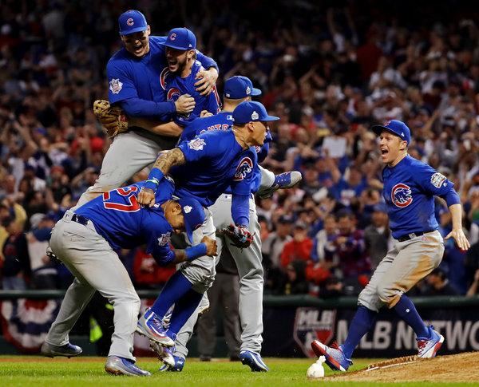

 The Chicago Cubs are known for having the longest time without a World Series Championship. They went without a championship for 108 years before finally winning the World Series in 2016. They beat the Cleveland Indians, after being down 3 games to 1. They game back and beat the Indians in 7 games. 108 years earlier, the Chicago Cubs were the first major league team to play in 3 straight World Series. They won two of them in 1907 and 1908.
The Cubs had many great players on that championship team. Ben Zobrist was named the MVP. He had many key plays and hits that helped the Cubs win. In the top of the 10th Inning, Zobrist had a double that would eventually lead to the Cubs first World Series win in 108 years, ending the drought.
During the late 2000s and early 2010s, the Cubs were considered one of the worst teams in the MLB. They missed the playoffs and had losing season after losing season. The Cubs than accquired players like Kris Bryant, Anthony Rizzo, Javier Baez, Ben Zobrist, and many many more to put together a championship contender team.